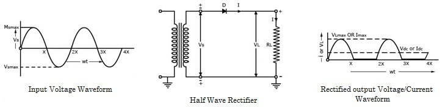

The ac voltage across the secondary winding changes polarities after every half cycle. During the positive half-cycles of the input ac voltage i.e. when upper end of the secondary winding is positive w.r.t. its lower end, the diode is forward biased and therefore conducts current. If the forward resistance of the diode is assumed to be zero (in practice, however, a small resistance exists) the input voltage during the positive half-cycles is directly applied to the load resistance RL, making its upper end positive w.r.t. its lower end. The waveforms of the output current and output voltage are of the same shape as that of the input ac voltage.
|  |
During the negative half cycles of the input ac voltage i.e. when the lower end of the secondary winding is positive w.r.t. its upper end, the diode is reverse biased and so does not conduct. Thus during the negative half cycles of the input ac voltage the current through and voltage across the load remains zero if the reverse current, being very small in magnitude, is neglected. Thus for the negative half cycles no power is delivered to the load. Thus the output voltage developed across load resistance RL (VL) is a series of positive half cycles of alternating voltage, with intervening very small constant negative voltage levels, It is obvious from the figure that the output is not a steady dc, but only a pulsating dc wave. Since only half-cycles of the input wave are used, it is called a half-wave rectifier.